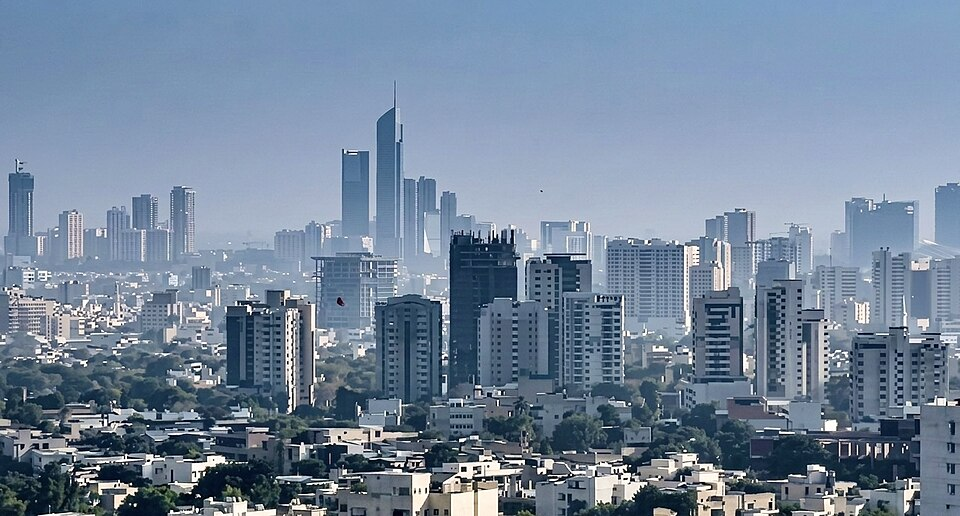

From Wikipedia, the free encyclopedia
Karachi is the capital of the province of Sindh and the largest city of Pakistan. It is located on the coast of the Arabian Sea and is the main seaport and financial centre of the country.[1]

Karachi skyline (illustration)
| Karachi | |
|---|---|
| Country | Pakistan |
| Province | Sindh |
| Nickname | City of Lights |
| Time zone | PKT (UTC+5) |
The area was once a small fishing village known as Kolachi. During the 18th century it grew into a trading town. In 1947 Karachi became the first capital of Pakistan.[2]
Karachi has grown from a small fishing village into a big city.
Karachi lies on the coast of the Arabian Sea. The weather is hot and dry, with mild winters.
The city is divided into seven districts:
| No. | District | Note |
|---|---|---|
| 1 | South | Old city and business area |
| 2 | East | Residential and commercial |
| 3 | Central | Residential |
| 4 | West | Industrial and residential |
| 5 | Korangi | Industrial zone |
| 6 | Malir | Airport area |
| 7 | Keamari | Port and harbour |
Karachi is the main business city of Pakistan. Important areas of work are:
[1] Encyclopedia entries on Karachi. [2] History of Pakistan.